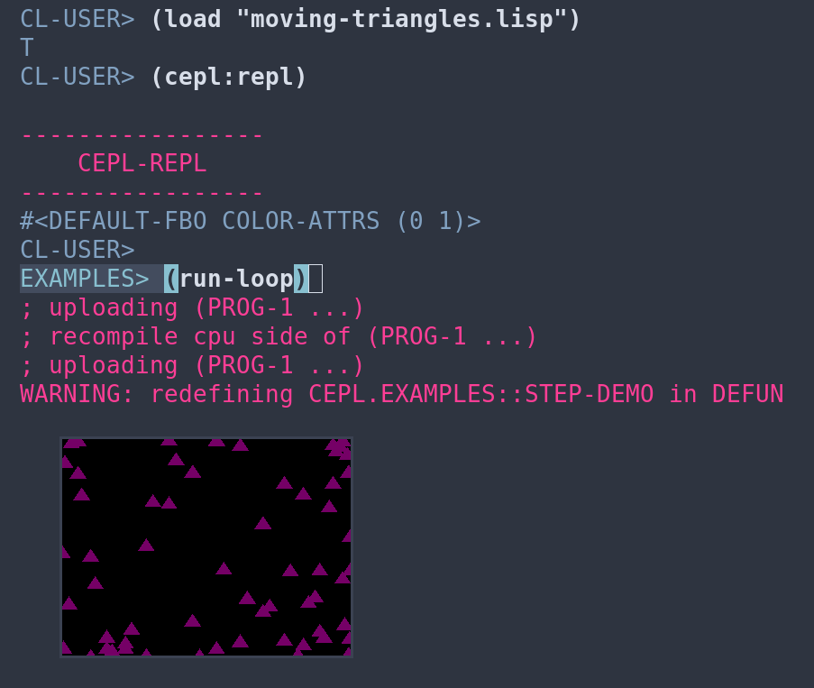

I joined the OSU Game Creation Club this year. I started programming because I wanted to make games, and I want to try that again. I'll use it as an opportunity to learn about the graphics stack, common lisp, and the cool tools created by Chris Bagley.
I've recently packaged skitter, cepl.skitter, cl-soil, dirt, dendrite, classimp, cepl.sdl2, and a few other projects necessary for playing with the cepl.examples repo. Now I can play with OpenGL in common lisp and reprogram games on-the-fly, all inside of a reproducible environment!
